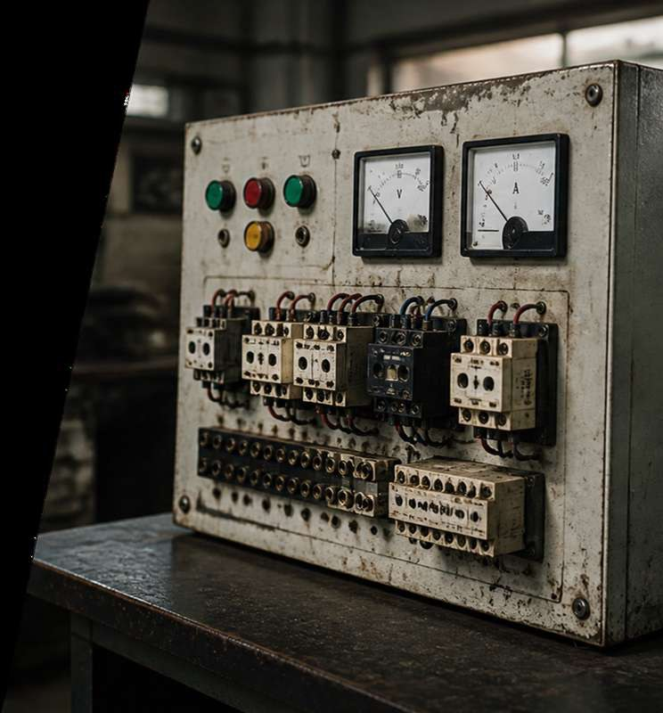

Bryan Cadena Agudelo
Estudiante del programa académico de Ingeniería, Universidad San Buenaventura, Bogotá.
Desarrollo tecnológico aplicado con revisiones periódicas: del diagnóstico del tablero existente a la sustentación en EXPOSANBUENA.
Estudiante del programa académico de Ingeniería, Universidad San Buenaventura, Bogotá.
Estudiante del programa académico de Ingeniería, Universidad San Buenaventura, Bogotá.
Profesor del Proyecto Integrador, Facultad de Ingeniería, Universidad San Buenaventura — sede Bogotá. Semestre 2026-II.
Fechas propuestas por el equipo; pueden ajustarse según el calendario académico.

Render ilustrativo
Inventario de componentes, revisión de la normativa aplicable y selección de las señales a supervisar.
28 sep – 4 octAsignación de pines, acondicionamiento de señal con optoacopladores y módulo de relés, y definición de las tareas del firmware.
5 – 11 octProgramación de las tres tareas FreeRTOS: seguridad crítica, control de motores y telemetría.
12 – 25 octCableado de entradas y salidas, montaje del módulo de relés y prueba de señales sin carga.
19 oct – 1 novSimulación de disparo del relé térmico, verificación del apagado de los tres contactores, revisión de la alarma y los reportes por puerto serie.
26 oct – 8 novInforme final, planos actualizados y preparación de la sustentación en EXPOSANBUENA.
2 – 8 novEl tablero físico, el mapa de señales y la arquitectura del firmware ya están listos. Las pruebas de validación de la Fase 5 están programadas según el cronograma.
Breakers, contactores trifásicos, relés térmicos NR2-25, temporizador y panel frontal completo con pulsadores, selectores, pilotos, sirena y amperímetro.
Ocho pines GPIO asignados: tres selectores y la cadena térmica como entradas aisladas; tres contactores y el zumbador como salidas.
Arquitectura FreeRTOS que separa seguridad, control y telemetría con prioridades y núcleos distintos. Base lista para Node-RED el próximo semestre.